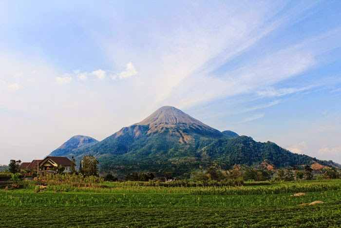
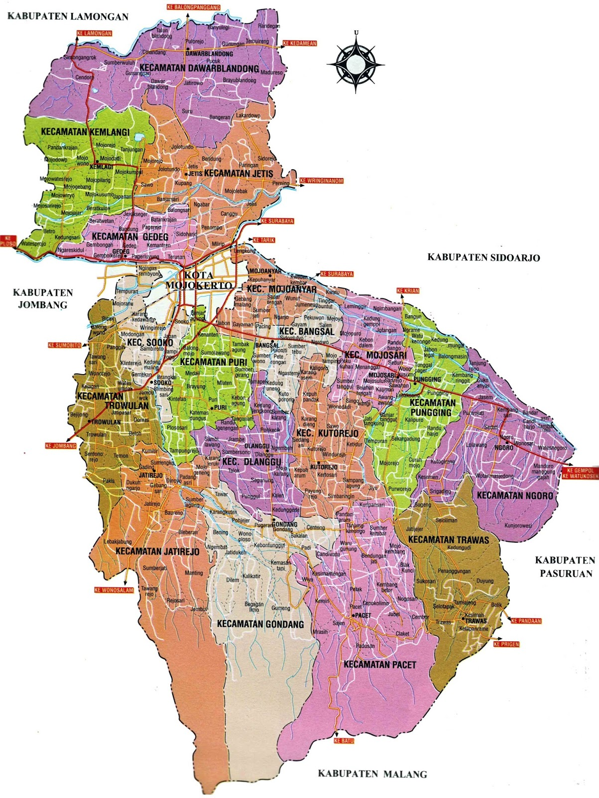
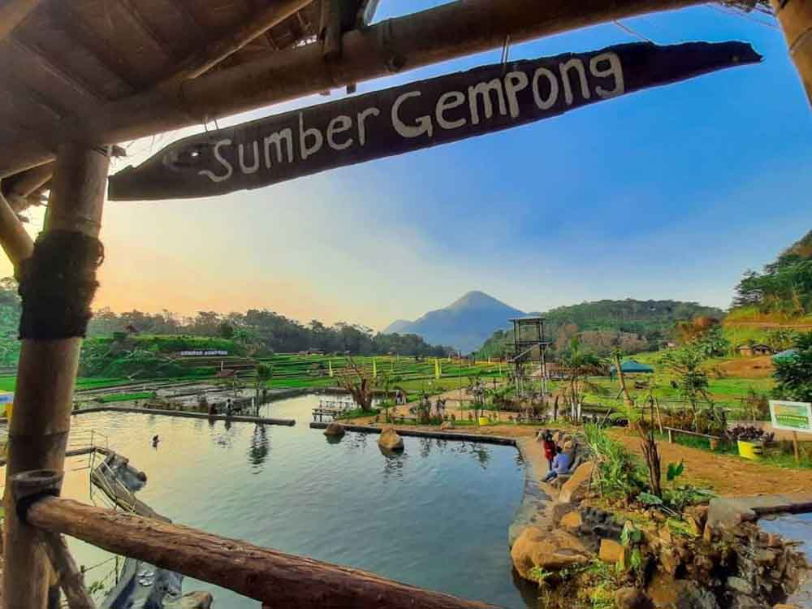
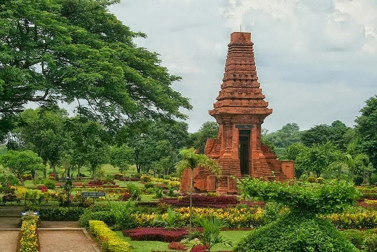
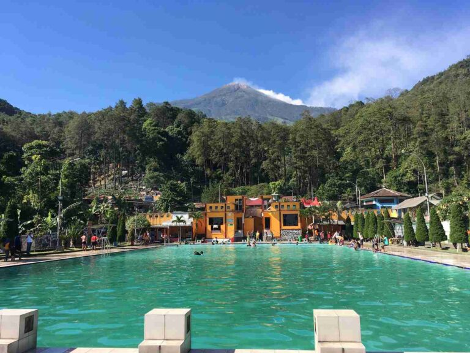

Keindahan alam, budaya, dan kehidupan yang damai
Kabupaten Mojokerto adalah Kabupaten yang dikelilingi oleh pegunungan hijau, sawah yang luas, dan masyarakat yang ramah. Kabupaten ini memiliki potensi besar di bidang pertanian, pariwisata, dan budaya lokal.




Email: kabmojo@gmail.com
Telepon: 08123456789